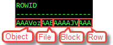

Created by Jongwon
An index is an optional structure,
associated with a table or table cluster,
that can sometimes speed data access
200GB 정도 되는 인구 테이블
5억명 정도로 구성되어 있을 때
특정 사람들을 찾을 경우
Binary Trees가 아닌 Balanced Trees
책 뒷면의 색인과 비슷한 방법
ROWID를 KEY 값과 함께 저장하는 인덱스 구조
테이블에 값이 실제로 저장되어 있지는 않은
pseudo column
데이터 오브젝트 번호, 데이터 파일 번호, 블록 번호, 로우 번호를 포함

Distinct Value의 수가 적을 때
DML문이 거의 사용되지 않거나 읽기 위주의 대용량 데이터 환경(Data Warehousing)
두개 이상의 Bitmap을 활용한 Bitwise 연산으로 여러 인덱스를 동시에 활용
예외가 있을 수 있고, 정상적으로 인덱스 사용이 불가능할 뿐
사용자체가 불가능한 것은 아니다.
Data Dictionary로 조회 할 수 있다.